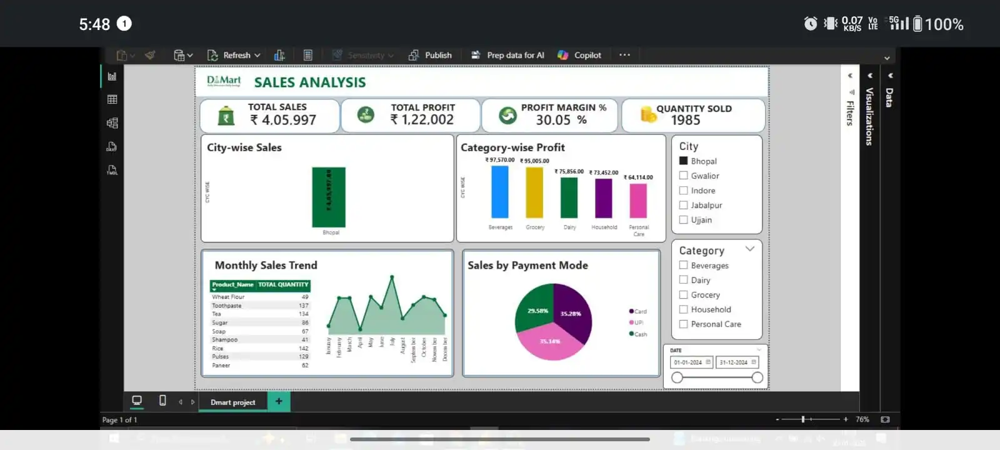
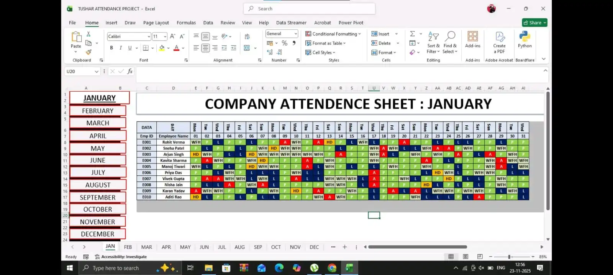
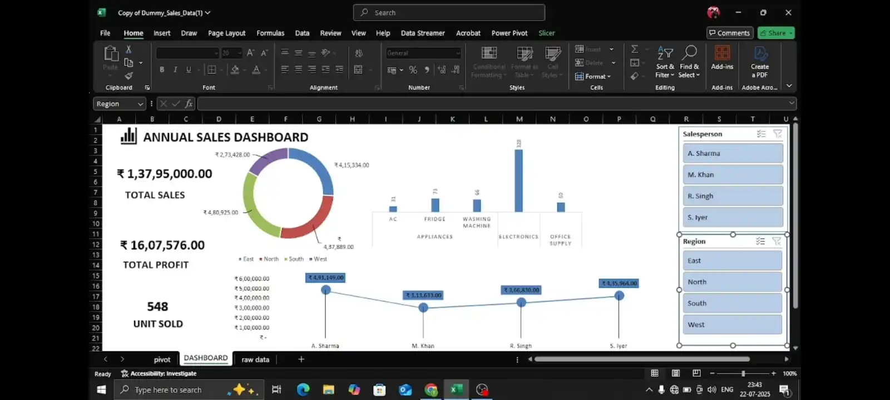

I build Excel automation, SQL reports, Power Query workflows and interactive Power BI dashboards that reduce manual work and improve business reporting.
I'm a Bhopal-based MIS Coordinator with 3 years of experience in Excel automation, SQL reporting, Power Query and Power BI dashboards. I'm actively preparing for better opportunities in Data Analytics and Business Intelligence by building practical projects that solve real business reporting problems.
Pivot Tables, XLOOKUP, IF, Power Query, Automation
JOIN, WHERE, GROUP BY, Reporting Queries
DAX, KPI Cards, Interactive Dashboards
Data Cleaning, Daily Reports, Account Verification

Power BI dashboard featuring KPI cards, DAX measures, city-wise sales, category-wise profit and monthly trends.

Excel HR automation system with attendance tracking, salary calculation and deduction logic.

Operational KPI dashboard with donut charts, calendar filters and business reporting visuals.
Prepare daily MIS reports, automate Excel workflows, verify account data and support operational reporting.
Transition into Data Analytics and Business Intelligence roles using Excel, SQL and Power BI.